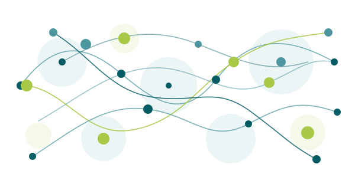

Home
Cryo-ET and Subtomogram averaging Workshop
Welcome to the workshop
The focus of the workshop is to provide training in some of the most recent developments of CryoET and STA data processing using for instance nextPYP, TomoBEAR, Warp/M, taught by the developers themselves.

NEXT UP
QUICK LINKS
ANNOUNCEMENTS
No active announcements.
TEAM
Karin Walldén
Training lead
Stockholm University
Marta Carroni
Training lead
Stockholm University
View full team →